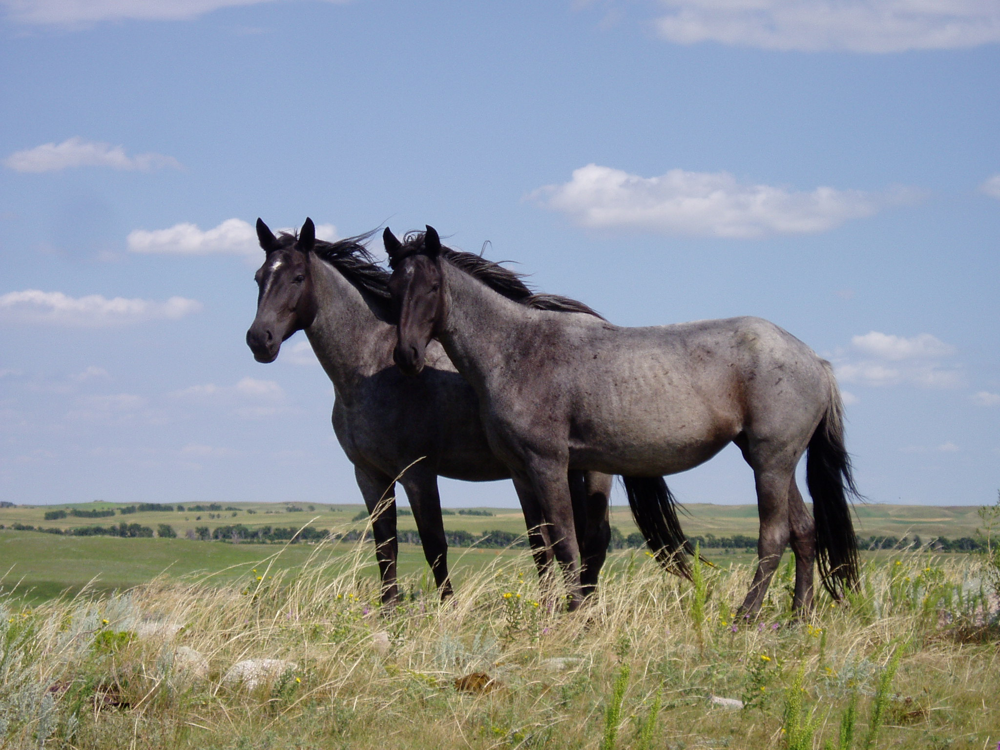

Tamhäst (Equus ferus caballus) är en domesticerad underart av vildhästen som tillhör släktet hästar (Equus).
Hästen domesticerades för cirka 6 000 år sedan, och har sedan dess använts som dragdjur eller riddjur, men även som föda och för att producera mjölk eller hudar.
Under lång tid har man avlat fram flera skiftande typer i färg och kroppskonstitution, vilket utvecklats till dagens hästraser.
Idag är användningen av hästar i stort sett begränsad till polisrytteri, ceremoniellt kavalleri och hästsport.

Links